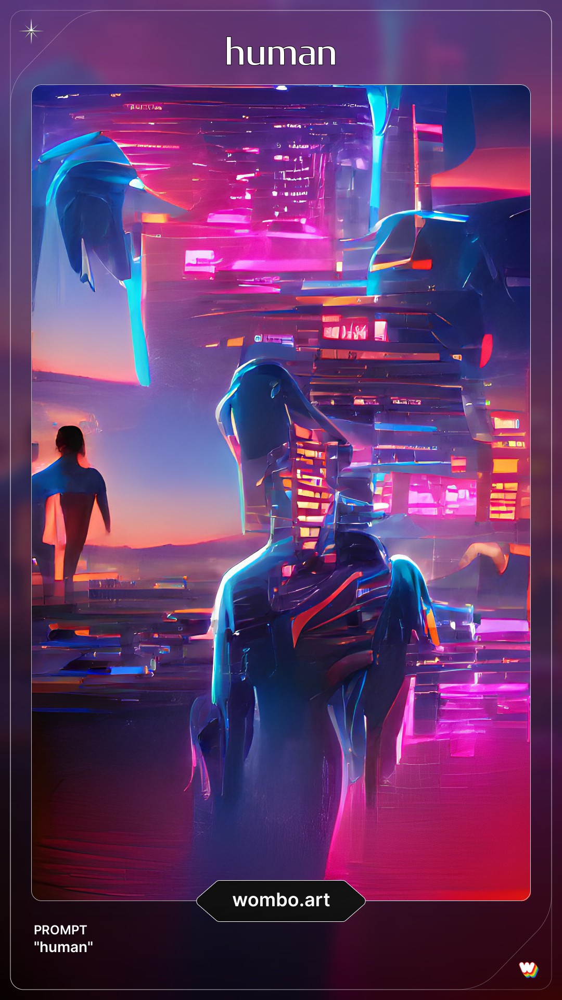
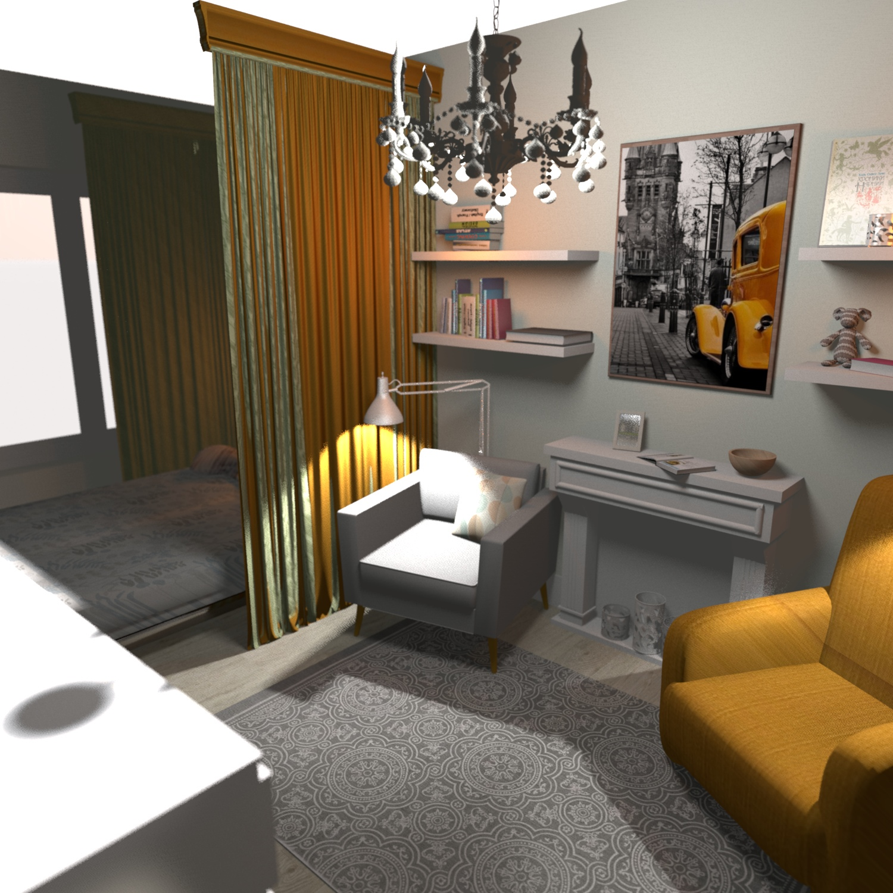
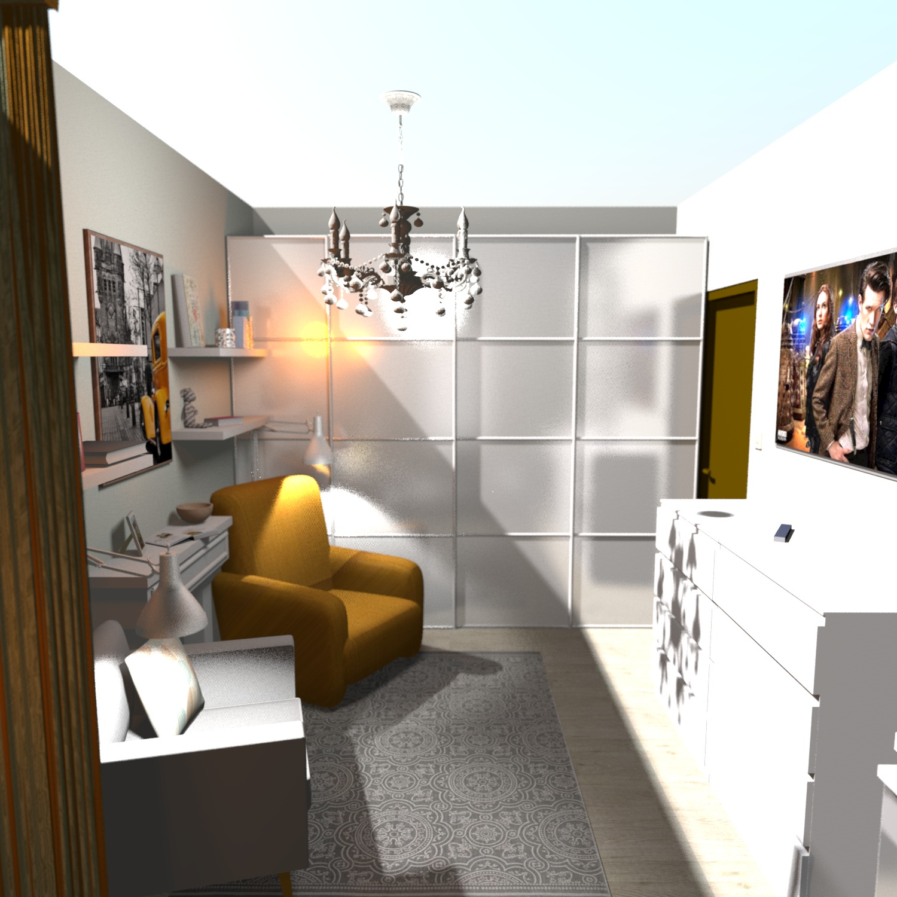
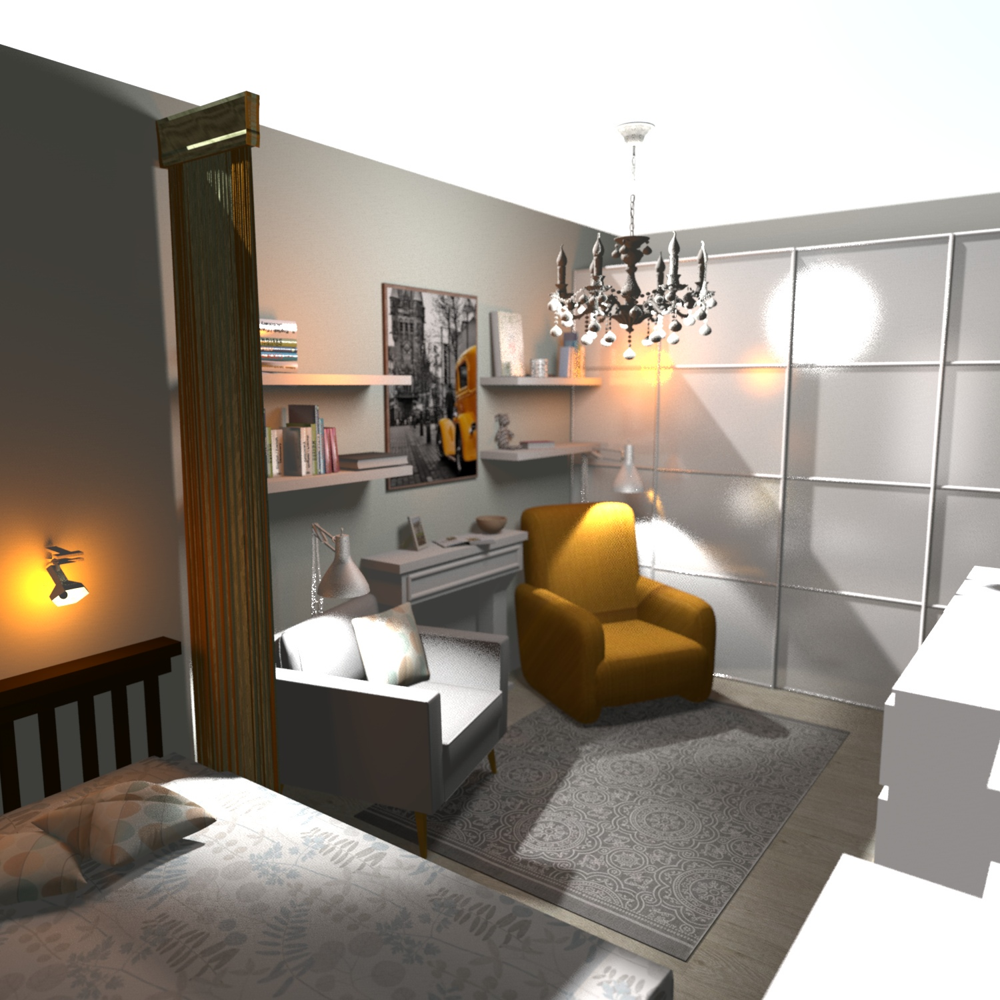
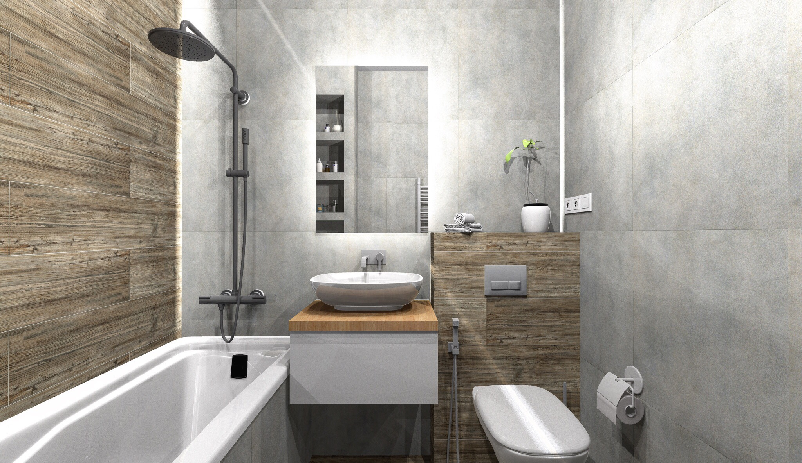
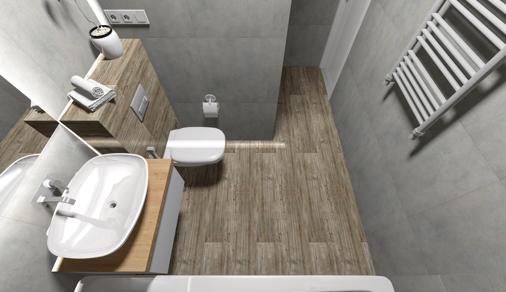

Биография художника Кимико
Имя: Кимико
Возраст: 28
Биография: С детства родители отдали девочку в художественную школу, так как видели ее интерес к краскам. С тех пор Кимико крутилась в художественной сфере, у нее был большой интерес к этому. Она перепробовала множество техник, но остановилась лишь на одной - Синтвейв. Она обожает представлять мир будущего и передает свои мысли с помощью картин. Кимико уверена, что человечество ждет будущее, где все будет состоять только из технологии и все будет роботизировано. Поэтому ее дом оснащен последними технологиями.
Характер: Уверенная в себе, воспитанная, внимательная, добродушная, искренняя, немного застенчивая
Особенности: Ведет личный дневник, спит в обнимку с плюшевыми игрушками, любит читать, носит носки с яркими принтами
Произведения Кимико:

Так выглядит квартира Кимико, простая, но утютная





Короткий ролик, рассказывающий о детстве художницы